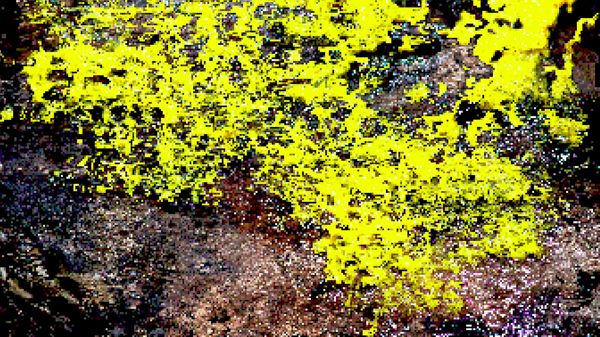
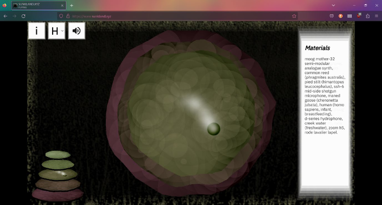

This page contains the list of links to the creative tools created within the Mediated Expression Studio. Students were asked to design and build a small interactive expressive tools for web browsers, guided by a specific creative context of their choice. The tools are intended to be of limited scope and experiment with the novel application of interaction design principles such as information design, feedback and mapping.
Creative Tools
-
Link to toolObject Animacy : Asher Elazary & Patrick Hase

Object Animacy is a tactile audiovisual web app developed to interact with digital slime mould. The site prompts the user through calibration of a personal interface agent, providing a custom feel for communicating with non-human intelligences.
-
Link to toolSUNKLAND.XYZ : Amias Hanley & Patrick Hase

SUNKLAND was originally composed for 24.2 channels by Amias Hanley and first exhibited at Liquid Architecture’s Unheard Relations, as part of McClelland Sculpture Park and Gallery’s Site & Sound: Sonic art as ecological practice 2021.
Here, we —Hanley and Hase— have created an interactive web-based presentation of this audio work, which invites you to move through, explore and respond to the composition of sounds, textures and spatial arrangements.